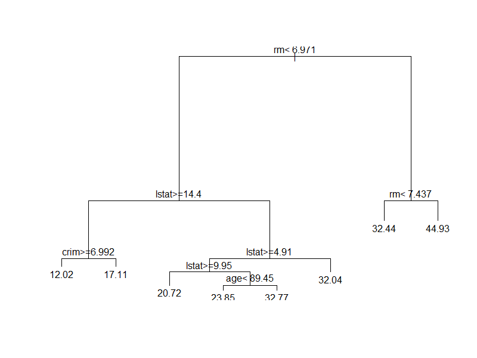

Case 4
Boston Housing Data
Leon Lin Frances Liu Tony Paciolla
- Fit a regression tree (CART) on the training data.
> boston.rpart = rpart(medv ~., data = boston.train)
> plot(boston.rpart)
> text(boston.rpart, pretty = T)
Regression Tree 
- Report the model’s in-sample MSE performance.
> boston.train.pred.tress = predict(boston.rpart)
> mean((boston.train.pred.tress - boston.train$medv)^2)
[1] 17.48121
- Test the out-of-sample performance. Using tree model built from (i) on the training data, test with the remaining 10% testing data.
Report out-of-sample model MSE
> mean((boston.test.pred.tree - boston.test$medv)^2)
[1] 14.35141
- Conduct linear regression using all explanatory variables except “indus” and “age” on the training data.
Report the model’s in-sample MSE. Test the out-of-sample performance with the remaining 10% testing data.
Report out-of-sample model MSE
> boston.model0 = lm(medv ~ . - indus - age, data = boston.train)
> boston.train.model = predict(boston.model0)
> mean((boston.train.model - boston.train$medv)^2)
[1] 22.30714
> mean((boston.test.model - boston.test$medv)^2)
[1] 18.67074
When comparing the CART to linear regression, the MSE, 14.35, in CART is lower than the linear regression MSE, 22.30. The CART fits the model better than linear regression.
German Credit Score
Fit a classification tree (CART) on the training data; Report the model’s in-sample performance, for example, misclassification rate etc.
> cost(credit.train$Y, credit.train.pred1)
[1] 0.3835
> table(credit.train$Y, credit.train.pred1, dnn = c("True", "Predicted"))
Predicted
True 0 1
0 3027 744
1 79 150
Classification Tree
- Test the out-of-sample performance. Using tree model built from (i) on the training data, test with the remaining 20% testing data.
Report the out-of-sample AUC and misclassification rate.
> slot(performance(pred, "auc"), "y.values")[[1]]
[1] 0.8137255
> table(credit.test$Y, credit.test.pred.rpart2, dnn = c("Truth","Predicted"))
Predicted
Truth 0 1
0 384 92
1 8 16
cost = function(r, pi) {
+ weight1 = 10
+ weight0 = 1
+ c1 = (r == 1) & (pi == 0)
+ c0 = (r == 0) & (pi == 1)
+ return(mean(weight1 * c1 + weight0 * c0)) }
> cost(credit.test$Y, credit.test.pred1)
[1] 0.344

When comparing the misclassification rates of both the in sample and out of sample proportions, they come out to be fairly similar, almost identical.
The majority of the misclassification comes from when a client has good credit, but the model predicts that he will have bad credit so they get denied. When it comes to the cost of the models between in sample and out of sample, they are pretty similar as well, although the in sample was just slightly higher.
The AUC is also fairly high, meaning that this model has a good fit for accuracy